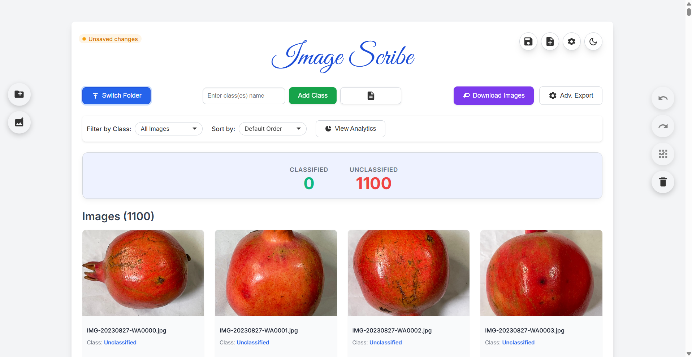

A powerful, private, offline-first image classification tool for dataset preparation.
Download InstallerHere’s a preview of Image Scribe in action.
Your images and classification data never leave your computer. Image Scribe works completely offline—no cloud, no tracking, no uploads.